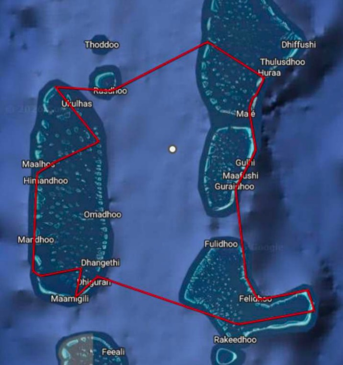
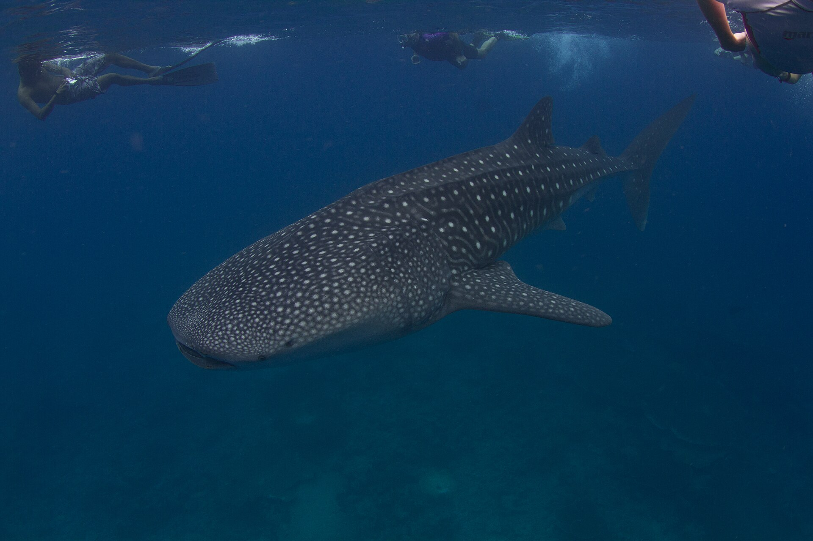
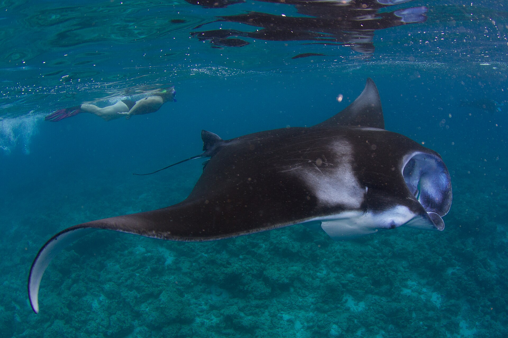
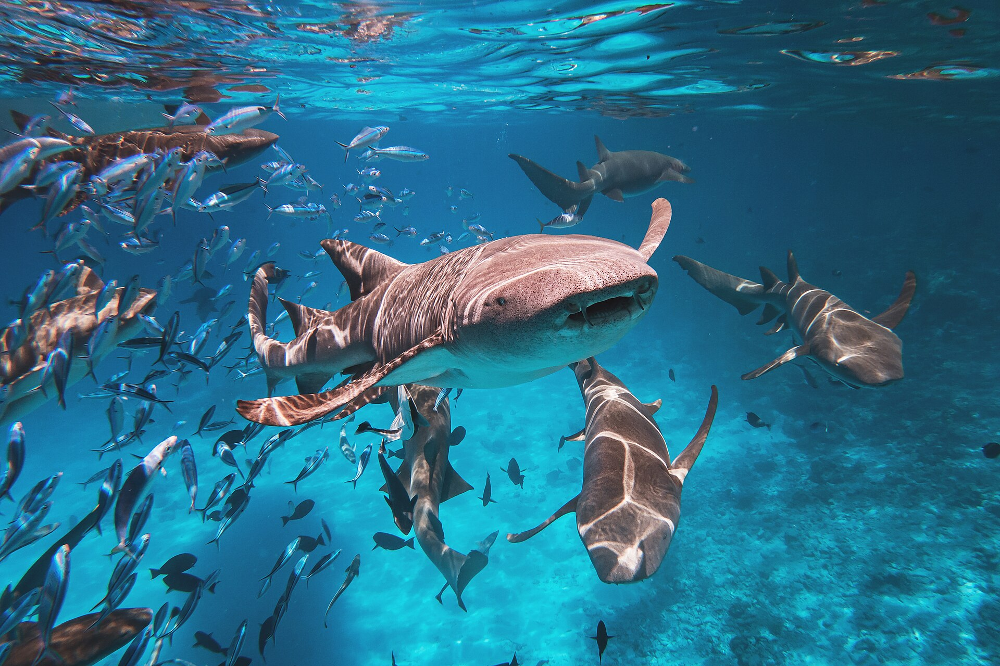

45 米主船
一周都住在这艘船上，吃饭、休息、睡觉和集合都在主船完成。

NEO Cruiser · Four Atolls Route
2026.08.13-08.20，住在 NEO Cruiser 上，从马累出发，走马尔代夫中部经典四方线：南北马累、瓦武、南阿里、北阿里和 Rasdhoo。
简单说，四方线很适合第一次去马代船宿的人。你不用每天搬行李，也不用自己换岛赶船。船带你换海域，你每天跟着下水就好。
这条线会经过 KAAFU ATOLL（北马累环礁和南马累环礁）、ALIFU DHAALU ATOLL（南阿里环礁）、ALIFU ALIFU ATOLL（北阿里环礁）和 VAAVU ATOLL（瓦武环礁）。按潜水区域看，就是北马累、南马累、南阿里、北阿里和瓦武这 5 个中部区域。
中部海域常年相对平静，水也比较清。这里的鱼类、珊瑚和潜点类型都很丰富，所以鲸鲨、蝠鲼、护士鲨、礁鲨、鹰鳐、海龟和大鱼群都有机会遇到。整体难度相对友好，但个别潜点会有深度和水流，仍然需要稳定的潜水经验。
NEO 这趟四方线计划约 19-20 潜。因为 NEO Cruiser 可以夜间航行，路线可以拉得更开，尽量减少重复潜点，也会争取加入 Fotteyo Muli 这类马尔代夫代表性清晨潜点。

船宿最美妙的，是吃住潜都很方便。白天下水，潜完回船吃饭休息，船再带你去下一个潜点。
主船长约 45 米、宽约 11 米。房间有独立空调，船上有餐厅、休息区、酒吧、露天泳池和日光浴甲板。对客人来说，最省心的地方就是不用每天收拾行李，也不用自己研究岛间交通。


一周都住在这艘船上，吃饭、休息、睡觉和集合都在主船完成。
晚上船会移动到下一片海域，白天把时间留给潜水和休息。
船上有网络，方便和家人朋友报平安，也方便整理当天照片。
南阿里主要期待鲸鲨，北马累和阿里常有蝠鲼清洁站，瓦武常见护士鲨和礁鲨，马累附近可以看珊瑚礁、海底小山、鱼群和海龟。

去南阿里，大家最期待的就是鲸鲨。不能保证一定遇到，但这是四方线最有名、最值得期待的看点之一。

蝠鲼常在清洁站附近盘旋。看到的时候不要追，跟着潜导保持距离，安静看它们从身边游过。

瓦武常见护士鲨，很多人第一次看到一群鲨鱼就是在这里。它们看起来很大，但通常比较温和，放松贴贴就好。

就算没有遇到大货，每天也能看到鱼群、白鳍礁鲨、黑鳍礁鲨、鹰鳐和海龟。这些是四方线每天都好看的基本盘。
野生海洋生物无法保证。页面里的“可能看到”，指四方线常见或代表性期待，实际以当周海况、季节、水流和船方安排为准。
一趟船宿里除了下水，好的餐厅休息区和露天甲板、宽敞的房间，让旅程变得更加舒适。


每天潜水间隙都在船上用餐，不用上岛找餐厅，潜完冲澡后就能美美吃一顿。
Chill、聊天、整理照片，或者安静休息等下一潜。
傍晚看海、吹风、等日落，是船宿最舒服的空间之一。
上层vip海景大床房带浴缸(1间）；上层豪华海景房(5间）；高级房(9间）。
顶层甲板，空间独立，海景视野更好，顶奢体验。

分布在主甲板与上甲板，适合情侣、朋友或潜伴一起住。

有大床、双床和三床组合，适合朋友、潜伴或家庭同行。

每天的节奏很简单：白天潜水，吃饭，吹海风和休息。晚上看星星、聊天、睡觉，醒来又到了下一片海域。
登船、入住、整理装备，听船宿说明。第一天先把流程弄清楚，熟悉房间、餐厅、潜水集合区和安全要求。
围绕北马累、南马累、瓦武、南阿里、北阿里和 Rasdhoo 展开。每天根据海况安排 2-3 潜，可能包含夜潜；主要期待鲸鲨、蝠鲼、护士鲨、礁鲨、鱼群和珊瑚礁，也会争取安排 Fotteyo Muli 这类清晨潜点。
完成离船安排。回程航班要留够时间，也要遵守潜水后不能立刻飞行的间隔要求。
实际潜点、潜数和顺序会根据天气、海况、水流和船方安全判断调整。
第一次去马代船宿，不用把路线想得很复杂。
住上船，跟着船走，放松潜水，享受假期。